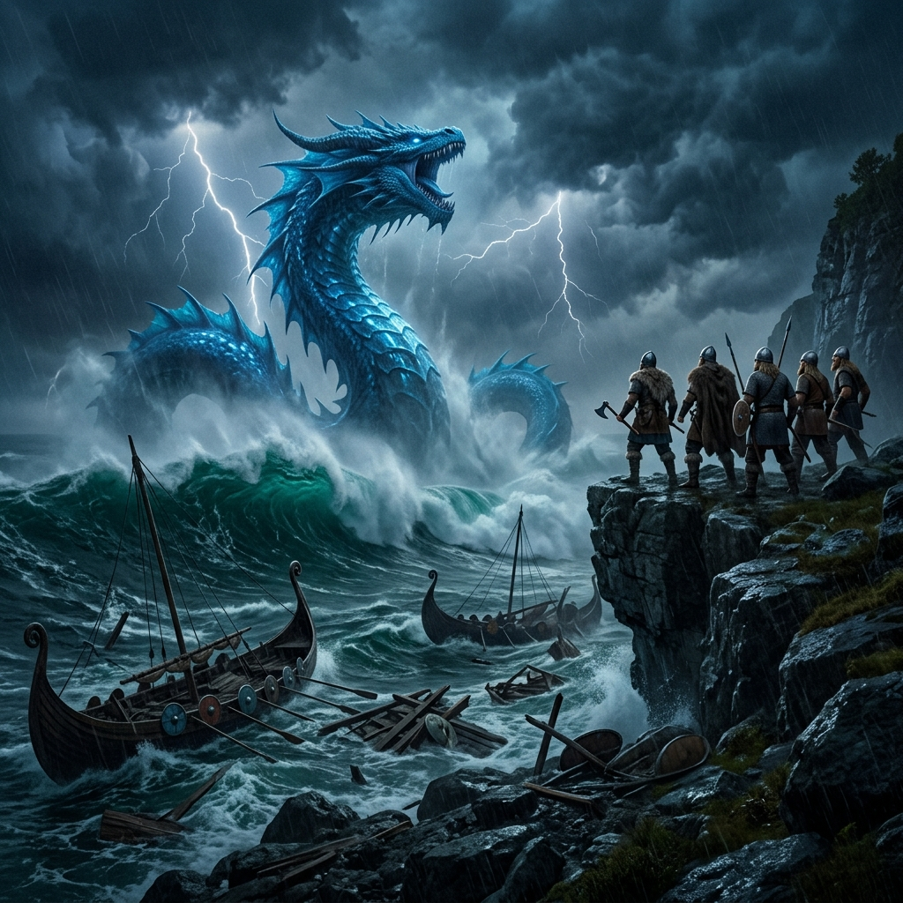
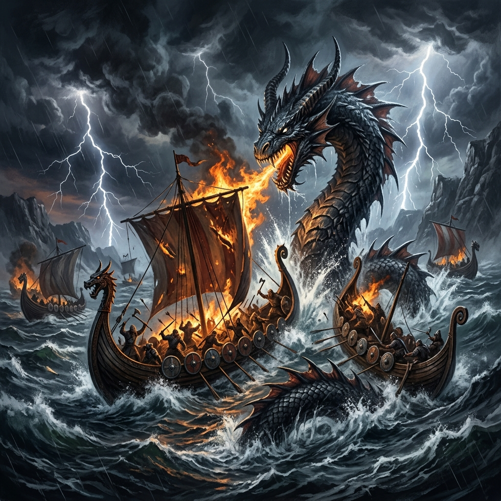

Cuando el océano ruge, los reinos tiemblan.
E
n los albores de los tiempos, antes de que los hombres tallaran sus primeros drakkares, Fafurion ya gobernaba las profundidades. Creado por Shilen como el guardián de los océanos, su aliento era la marea y su ira la tormenta.
Pero la corrupción no nace en el abismo, sino en el corazón de los dioses. Tras las guerras ancestrales, Fafurion se sumergió en un sueño de milenios, alimentado por el odio y el rugido del mar agitado. Ahora, los barcos vikingos que osan cruzar sus dominios solo encuentran madera astillada y muerte.
"El agua no olvida. El dragón no perdona." — Leyenda Rúnica.
Hoy, el sello se ha roto. El océano se tiñe de un verde esmeralda antinatural y los cielos lloran fuego. Los reinos del norte tiemblan ante el despertar de la bestia que devora horizontes.

Únete al Clan de Fafurion